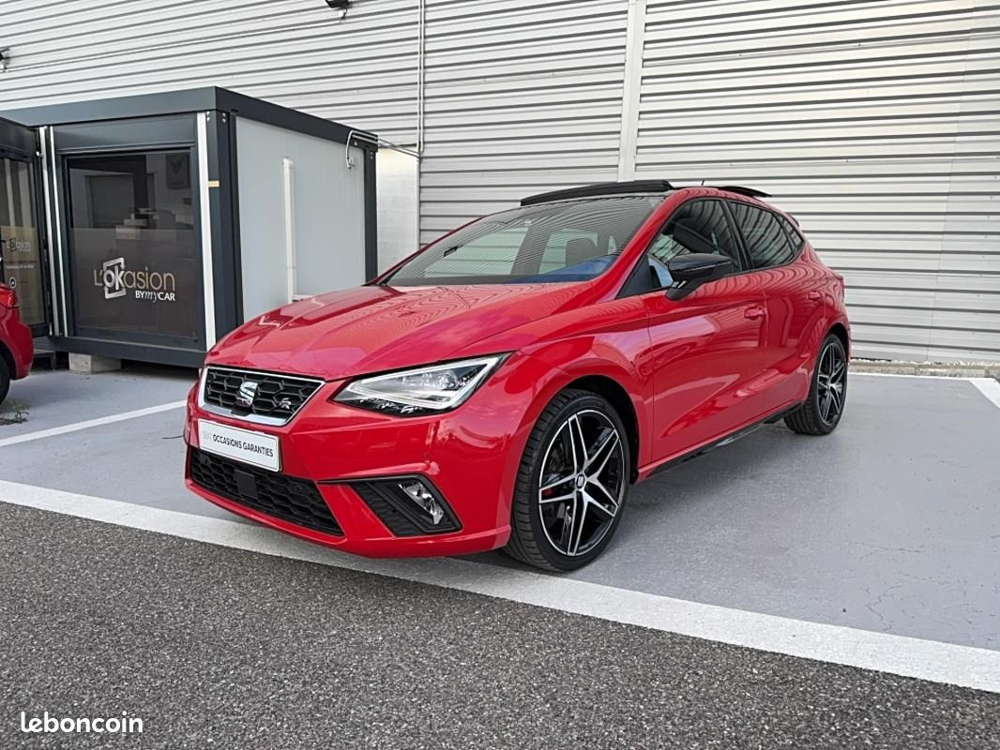

Retour au calculateur et à la liste
des fiches

Seat Ibiza V 1.5 TSI (2021)
Type : Thermique (Essence)
Une citadine polyvalente offrant des performances sportives grâce à son moteur 1.5 TSI de 150ch et sa boîte DSG7, dans une finition FR Xclusive très bien équipée.
Caractéristiques Clés
- Autonomie WLTP : N/A (essence)
- Batterie utile : N/A (essence)
- Autonomie électrique WLTP : N/A (essence)
-
Puissance :
150 ch
- 0-100 km/h : 8.1s
-
Conso Mixte WLTP :
5.9 L/100km
- Émissions CO2 : 134 g/km
- Charge AC Max : N/A (essence)
- Charge DC Max : N/A (essence)
-
Prix à partir de :
26000 €
- Motorisation : 1.5 TSI 150 ch ACT DSG7
Avantages
- Moteur performant et coupleux
- Boîte DSG7 rapide et douce
- Design dynamique et sportif (finition FR)
- Bonne habitabilité pour la catégorie
- Équipement complet en version FR Xclusive
- Comportement routier agile
Inconvénients
- Suspension ferme (version FR)
- Consommation qui peut grimper en conduite sportive
- Quelques plastiques durs à l'intérieur
- Coffre correct mais sans plus